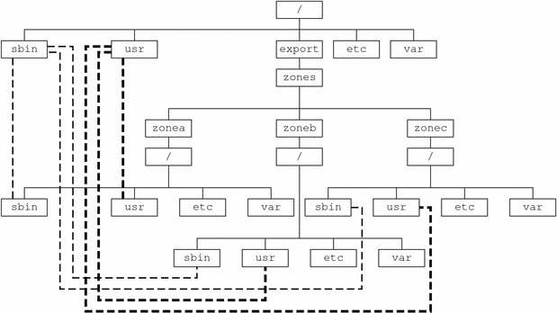

Previous
Previous
Determine the Zone Host Name and Obtain the Network Address
You must determine the host name for the zone. Then, you must assign an IPv4 address or manually configure and assign an IPv6 address for the zone if you want it to have network connectivity.
Zone Host Name
The host name you select for the zone must be defined either in the hosts database or in the /etc/inet/hosts database, as specified by the /etc/nsswitch.conf file in the global zone. The network databases are files that provide network configuration information. The nsswitch.conf file specifies which naming service to use.
If you use local files for the naming service, the hosts database is maintained in the /etc/inet/hosts file. The host names for zone network interfaces are resolved from the local hosts database in /etc/inet/hosts. Alternatively, the IP address itself can be specified directly when configuring a zone so that no host name resolution is required.
For more information, see TCP/IP Configuration Files in System Administration Guide: IP Services and Network Databases and the nsswitch.conf File in System Administration Guide: IP Services.
Shared-IP Zone Network Address
Each shared-IP zone that requires network connectivity has one or more unique IP addresses. Both IPv4 and IPv6 addresses are supported.
IPv4 Zone Network Address
If you are using IPv4, obtain an address and assign the address to the zone.
A prefix length can also be specified with the IP address. The format of this prefix is address/prefix-length, for example, 192.168.1.1/24. Thus, the address to use is 192.168.1.1 and the netmask to use is 255.255.255.0, or the mask where the first 24 bits are 1-bits.
IPv6 Zone Network Address
If you are using IPv6, you must manually configure the address. Typically, at least the following two types of addresses must be configured:
- Link-local address
A link-local address is of the form fe80::64-bit interface ID/10. The /10 indicates a prefix length of 10 bits.
- Address formed from a global prefix configured on the subnet
A global unicast address is based off a 64–bit prefix that the administrator configures for each subnet, and a 64-bit interface ID. The prefix can also be obtained by running the ifconfig command with the -a6 option on any system on the same subnet that has been configured to use IPv6.
The 64–bit interface ID is typically derived from a system's MAC address. For zones use, an alternate address that is unique can be derived from the global zone's IPv4 address as follows:
16 bits of zero:upper 16 bits of IPv4 address:lower 16 bits of IPv4 address:a zone-unique number
For example, if the global zone's IPv4 address is 192.168.200.10, a suitable link-local address for a non-global zone using a zone-unique number of 1 is fe80::c0a8:c80a:1/10. If the global prefix in use on that subnet is 2001:0db8:aabb:ccdd/64, a unique global unicast address for the same non-global zone is 2001:0db8:aabb:ccdd::c0a8:c80a:1/64. Note that you must specify a prefix length when configuring an IPv6 address.
For more information about link-local and global unicast addresses, see the inet6(7P) ma page.
Exclusive-IP Zone Network Address
Inside an exclusive-IP zone, configure addresses as you do for the global zone. Note that DHCP and IPv6 stateless address autoconfiguration can be used to configure addresses.
See sysidcfg(4) for more information.
File System Configuration
You can specify a number of mounts to be performed when the virtual platform is set up. File systems that are loopback-mounted into a zone by using the loopback virtual file system (LOFS) file system should be mounted with the nodevices option. For information on the nodevices option, see File Systems and Non-Global Zones.
LOFS lets you create a new virtual file system so that you can access files by using an alternative path name. In a non-global zone, a loopback mount makes the file system hierarchy look as though it is duplicated under the zone's root. In the zone, all files will be accessible with a path name that starts from the zone's root. LOFS mounting preserves the file system name space.
Figure 18-1 Loopback-Mounted File SystemsSee the lofs(7S) man page for more information.
Creating, Revising, and Deleting Non-Global Zone Configurations (Task Map)
Task | Description | For Instructions |
|---|---|---|
Configure a non-global zone. | Use the zonecfg command to create a zone, verify the configuration, and commit the configuration. You can also use a script to configure and boot multiple zones on your system. You can use the zonecfg command to display the configuration of a non-global zone. | Configuring, Verifying, and Committing a Zone, Script to Configure Multiple Zones |
Modify a zone configuration. | Use these procedures to modify a resource type in a zone configuration, modify a property type such as the name of a zone, or add a dedicated device to a zone. | |
Revert a zone configuration or delete a zone configuration. | Use the zonecfg command to undo a resource setting made to a zone configuration or to delete a zone configuration. | Using the zonecfg Command to Revert or Remove a Zone Configuration |
Delete a zone configuration. | Use the zonecfg command with the delete subcommand to delete a zone configuration from the system. |